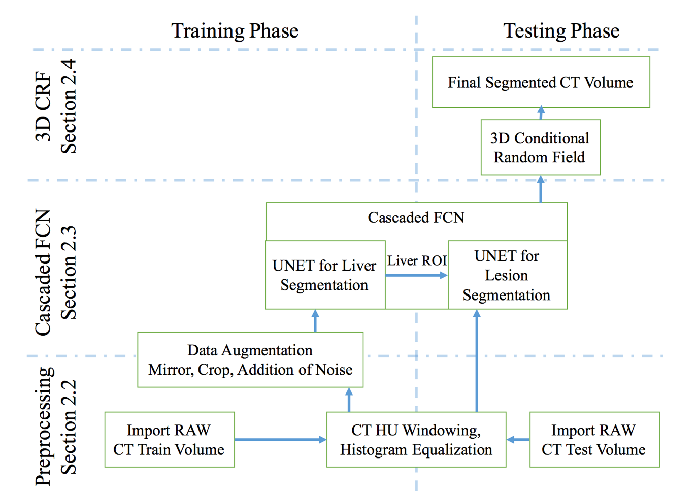
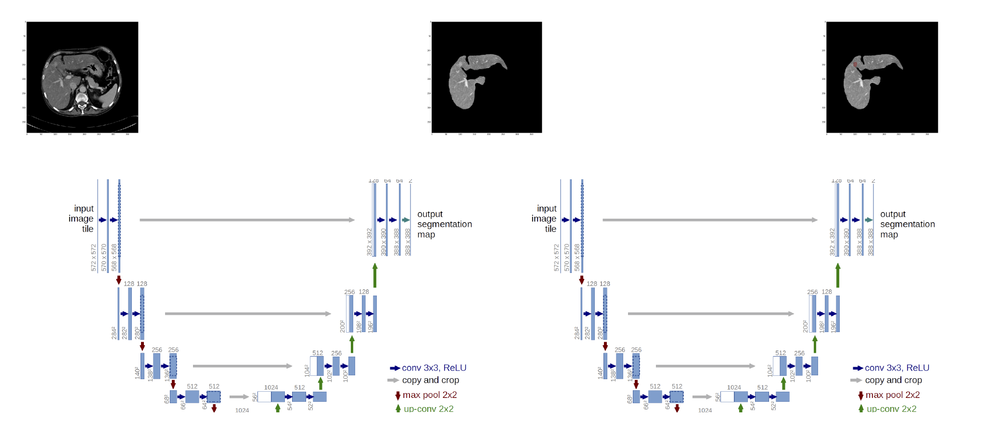
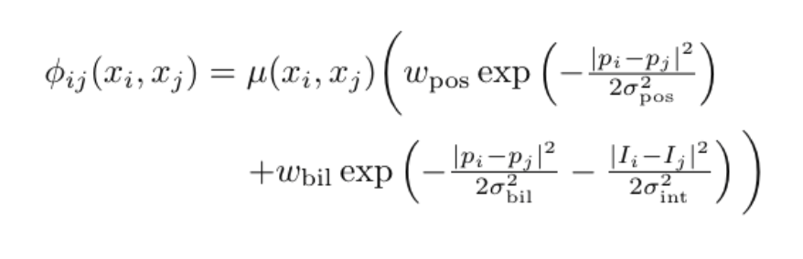
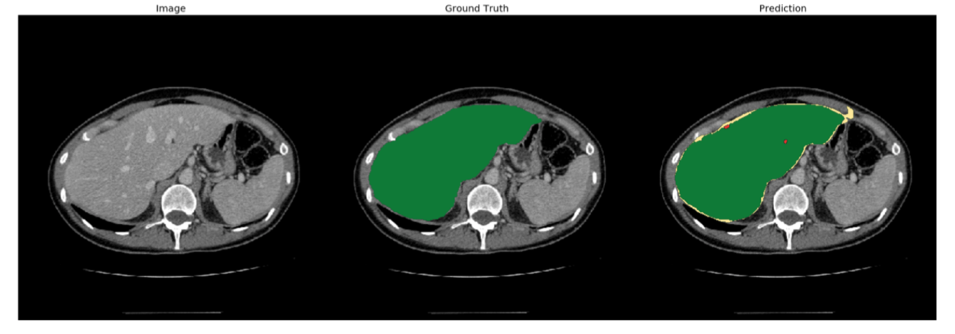

Xu Dong, Ziling Wu, Fan Zhang Fall 2017 ECE 5554 Computer Vision: Class Project Virginia Tech
Abstract
Automatic segmentation of the liver and its lesion is an important step towards deriving quantitative biomarkers for accurate clinical diagnosis and successful treatment of liver related health problem, such as liver cancer. In clinical routine, manual or semi-manual techniques are being applied now, which takes a lot of human effort. We have built a method to automatically segment liver and lesions in CT abdomen images to help doctors with liver related health problem treatment. Using our method, giving a set of CT images, the liver position and the lesion in the liver would be automatically highlighted.
Our method have 3 processes: image pre-processing, image segmentation, and image post-processing. The pre-processing would be consisted of visualizing 3D image data, suppressing irrelevant area, and enhancing the image contrast. We use a Cascaded Fully Convolutional Neural Networks (CFCN) to do segmentation part [1]. we trained two networks, one network to segment the liver in abdomen slices, and another network to segment the lesions, given an image of the liver. For the post-processing part, we use 3D Conditional Random Field (3DCRF) as the post-processing method to evaluate the segmentation considering both spatial coherence and appearance. Our segmentation results are in good agreement with the ground truth and the training results reach the accuracy about 0.65-0.7.
Teaser figures
Introduction
Identifying the liver and its lesion is an important step towards deriving biomarkers for accurate clinical diagnosis and successful treatment of liver related health problem, such as liver cancer. In the clinical routine, manual or semi-manual techniques are being applied, which are operator-dependent and time-consuming.
The accuracy of traditional computer-aided techniques are limited by the factors including low-contrast between liver and lesion, abnormalities in tissues and varying amount of lesions. Thus, it's essential to develop a new method to perform automatic segmentation of the liver and its lesion with high accuracy.
Approach

data and dataset
The dataset consists of 20 CT abdomen volumes with hepatocellular carcinoma HCC tumors. Data was acquired with different CT Scanner models at different clinical sites and all organs and tumors have been segmented manually by radiologists.
Data is publically available at http://www.ircad.fr/research/3d-ircadb-01/
Our method would have 3 processes: image pre-processing, image segmentation, and image post-processing. The pre-processing would be consisted of visualizing 3D image data, suppressing irrelevant area, and enhancing the image contrast. We plan to use a Cascaded Fully Convolutional Neural Networks (CFCN) to do segmentation part [1]. we will train two networks, one network to segment the liver in abdomen slices, and another network to segment the lesions, given an image of the liver. For the post-processing part, we will use 3D Conditional Random Field (3DCRF) as the post-processing method to evaluate the segmentation considering both spatial coherence and appearance.
image pre-processing
Pre-processing was carried out in a slice-wise fashion. First, the Hounsfield unit
values were windowed in the range [−100, 400] to exclude irrelevant organs and
objects, then we increased contrast through histogram equalization. As in [2],
to teach the network the desired invariance properties, we augmented the data
by applying translation, rotation and addition of gaussian noise.
image segmentation
A Cascaded Fully Convolutional Neural Networks (CFCN) were used to do the segmentation, which consists two sequential UNETs [2] to achieve the segmenting the liver from the CT images and segmenting the lesion from the segmented liver image separately. The input of the CFCN is the CT images after pre-processing, and the output of the CFCN is the hot map denoting the probability of each pixel belonging to background or foreground.
The architectures of typical unet and the cascaded FCN are shown below.

image post-processing
The predicted segmentations are then refined using dense 3D Conditional Random Fields.
we utilize 3D dense conditional random fields CRFs as proposed by [3]. To account for
3D information, we consider all slice-wise predictions of the FCN together in the
CRF applied to the entire volume at once.
3D Conditional Random Field (3DCRF) was used for the final label assignment. We formulate the final label assignment given the hot map (probability maps) from the CFCN as maximum a posteriori (MAP) inference in a dense CRF, considering both spatial coherence and appearance. The energy function and pairwise potentials are shown below:

We estimate the best labelling x = arg min E(x) using the efficient mean field approximation algorithm[3]. The weights and kernels of the CRF were chosen using a random search algorithm.
Experiments and results
TensorFlow was used to implement the CFCN model, and here is the UNET we implemented in TensorFlow:
Qualitative results
Show several visual examples of inputs/outputs of your system (success cases and failures) that help us better understand your approach.
During the training the loss changes as below:
The targeted segmented results are shown below:

[1]. Christ, Patrick Ferdinand, et al. "Automatic liver and lesion segmentation in CT using cascaded fully convolutional neural networks and 3D conditional random fields." International Conference on Medical Image Computing and Computer-Assisted Intervention. Springer International Publishing, 2016.
[2]. Ronneberger, O., Fischer, P., Brox, T.: U-net: Convolutional networks for biomedical image segmentation. In: MICCAI, vol. 9351, pp. 234–241 (2015)
[3]. Kr¨ahenb¨uhl, P., Koltun, V.: Efficient inference in fully connected crfs with gaussian
edge potentials. In: NIPS. pp. 109–117 (2011)